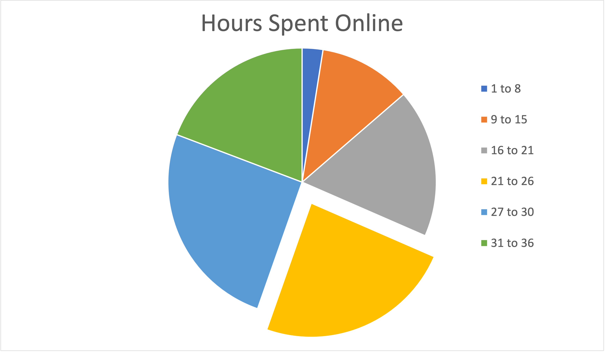

Rennaisance Students on Technology 24 Hours a Day on Average
By David Lopez and Azariah Otero
Parents and teachers of Springfield Renaissance students were shocked and worried to find out that their kids are on electronics 24 hours a day on average according to a recent survey.
“I am terrified that these students that have to prepare for the hard world have their heads down in screens for so long,” said Maria Garcia, 8th grade Math teacher. “How can they decide to do this and feel like there is nothing wrong with it?”
Story of The Survey
It was Garcia’s students who produced the idea to conduct the survey during a unit about averages. “When Mrs. Garcia asked me why I had my phone out in class,” said Lucas Logan. “I told her I was addicted to social media. She asked me to prove it. That’s why I knew I had to do a survey.”
Logan’s best friend, Demi Lovato, decided to help him with the survey because of a similar situation. “I was in History class, and I pulled out my phone because I was going to go on snapchat to post something on my story,” Demi said. “Mr. Henderson took my phone and called my mom because we were in the middle of a test. That is when I knew I had to help with the survey kids were doing in Mrs. Garcia’s room.”
Many adults are concerned about increased teen social media use during COVID. (CNN) “63% of parents have said their teen’s social media use has increased during the COVID-19 pandemic”, according to a recent children's hospital report.
24 hours online each day
However, everyone was surprised at the 24 hour per day average reported by the students, given that there are only 24 hours in a day. Logan explained how this was possible and turned out: “We asked students how much time they spent on their phones, how much on computers, and how much on streaming services, which are online devices and websites,” he said.
“A student who awakens to a phone at 6:00, gets off at 7:30 for school, and is then online for at least half of their classes may be on electronics for 6 hours by the time, they return home”, Logan explained. “At that point, they rush to their computers to do homework, while multi-tasking on their phones. This counts as double the time, so they are earning 2 hours per hour until dinner, 3 hours later, for a total of 12 hours.”
“During dinner, they have their phones on still, and the family is often eating in front of a television watching the news, so that’s 14 hours. Then, from 7pm until bedtime at 11 (many students are up that long), they remain at the streaming TV or on video games, while using phones and occasionally using laptops, adding up another 8 hours for a total of 22. And of course, students will lay down in their bed with their phones until 1am - everyone does, bringing the total to 24.”
Why so much time?
The survey considered not only time online, but websites used. Students reported that they spent most of the time browsing TikTok, Snapchat, Instagram, and even Twitter. Often, they are taken by other young people across the country and the world. Although Digital Literacy teacher Mr. M. has explained how students who rely on recommended TikTok videos will have a twisted view of their world, the warnings have had insignificant effect.
“I am so addicted to TikTok because of filter bubbles,” explained one student who logged 28 hours on average. “The crazy part is that I know that it’s because of filter bubbles, but I can’t stop watching people’s funny TikTok.”